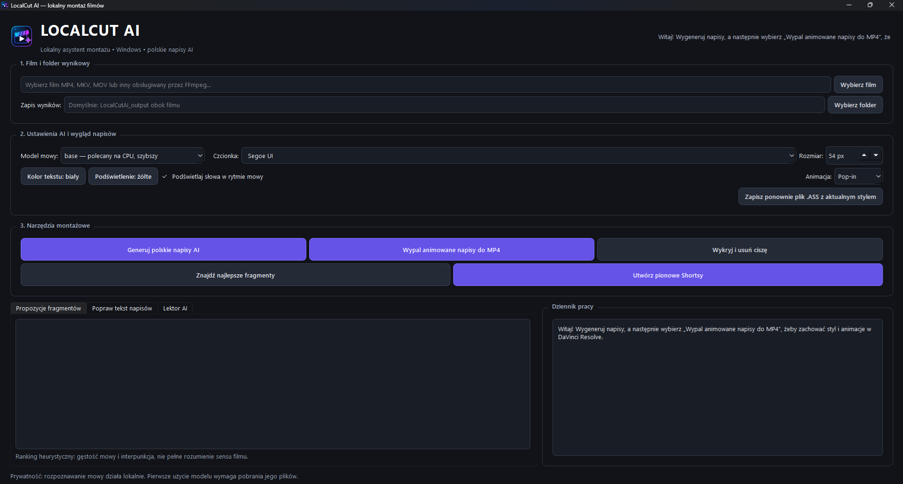

01 / TRANSKRYPCJA
Automatyczne polskie napisy
Rozpoznawanie mowy i eksport zsynchronizowanego tekstu do SRT, ASS i JSON.
SRTASSJSON
Twórz polskie napisy, poprawiaj ich tekst i synchronizację, generuj lektora AI i eksportuj gotowe MP4. LocalCut AI działa na Twoim komputerze — bez wysyłania nagrań na serwer tej strony.
Otwórz centrum pobierania i pobierz dwa archiwa ZIP.

LocalCut AI skupia typowe zadania przy przygotowaniu filmów — od transkrypcji po gotowy plik wideo.
Rozpoznawanie mowy i eksport zsynchronizowanego tekstu do SRT, ASS i JSON.
Poprawiaj błędne słowa, zmieniaj START i KONIEC, dodawaj lub usuwaj wybrane napisy.
Dobieraj czcionkę, rozmiar, kolory, podświetlanie słów i animacje. Wypal napisy w MP4.
Wybieraj polskie głosy, edytuj tekst fragmentów i generuj ścieżkę audio oraz film z podmienioną mową.
Wykrywaj dłuższe pauzy i twórz skróconą wersję nagrania bez ręcznego wycinania każdej przerwy.
Twórz propozycje krótszych fragmentów i eksportuj pionowe klipy w proporcji 9:16.
Strona internetowa jest statyczna i nie wysyła plików wideo. Funkcje lokalne przetwarzają media na komputerze użytkownika. Pierwsze uruchomienie może wymagać pobrania modeli AI i zależności.
To autentyczne fragmenty zrzutu okna LocalCut AI przekazanego przez autora. Centralna część pierwotnego zrzutu była zasłonięta oknem dialogowym, więc pokazujemy wyłącznie widoczne obszary. Prywatne ścieżki plików zostały zasłonięte. Kliknij obraz, aby powiększyć.
Wersja beta jest rozwijana. Przed publikacją dłuższego materiału warto sprawdzić wynik na krótkim fragmencie.
Wybierz materiał MP4, MKV lub MOV.
Uruchom napisy, edytor lub lektora AI.
Dopasuj tekst, czas, wygląd i brzmienie.
Zapisz MP4 i sprawdź przed publikacją.
Pobierz aplikację Windows oraz osobny pakiet FFmpeg i FFprobe. Rozpakuj oba archiwa do jednego folderu — narzędzia wideo będą wtedy dostępne obok LocalCutAI.exe. Nie trzeba osobno instalować Pythona; modele AI pobiorą się przy pierwszym użyciu.
Przejdź do centrum pobierania, aby pobrać aplikację i narzędzia wideo.
Przeglądaj pliki aplikacji i strony, kopiuj pojedyncze pliki albo pobierz cały projekt. Kod źródłowy jest publikowany jawnie.
Ładowanie kodu źródłowego…Tak. To wersja beta, więc funkcje mogą mieć ograniczenia. Przetestuj wynik na krótkim filmie i zachowaj kopię oryginalnego materiału.
Nie. Projekt można uruchomić na CPU. Przetwarzanie może być wolniejsze, a wymagania zależą od wybranego modelu AI.
Ta strona jest statyczna i nie przesyła plików wideo. Funkcje aplikacji opisane jako lokalne przetwarzają media na komputerze. Pobranie bibliotek i modeli przy pierwszym użyciu może wymagać Internetu.
Licencja MIT pozwala używać, kopiować, modyfikować i rozpowszechniać oryginalny kod przy zachowaniu informacji licencyjnej. Nie zastępuje licencji zależności, binariów ani modeli AI.
Nie. Interpreter Pythona i zależności aplikacji są spakowane w pliku LocalCutAI.exe. Pobierz jednak także osobne archiwum FFmpeg + FFprobe i rozpakuj oba archiwa do tego samego folderu.
EXE aplikacji oraz narzędzia FFmpeg są dostarczane osobno, żeby pobieranie było wygodniejsze. Rozpakuj oba archiwa do jednego folderu, tak aby LocalCutAI.exe, ffmpeg.exe i ffprobe.exe leżały obok siebie.
Rozpakuj paczkę i uruchom w folderze strony polecenie py -3.12 -m http.server 8080, następnie otwórz http://localhost:8080. Wymagane jest HTTP, aby przeglądarka kodu mogła wczytywać pliki źródłowe.